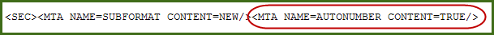
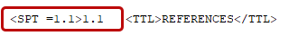
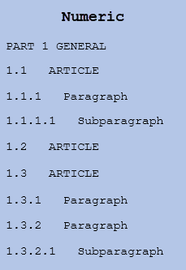
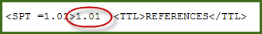
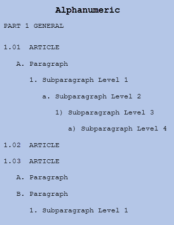

Automatic paragraph numbering provides numeric and alphanumeric numbering schemes, offering an easy approach for government and commercial projects. This allows you to easily toggle from one numbering system to another.
 For backward compatibility, SpecsIntact will continue to support Jobs and Masters that use the Traditional Numbering as well as allow them to be converted to the new automatically numbered format while providing the capability to switch between both numbering schemes.
For backward compatibility, SpecsIntact will continue to support Jobs and Masters that use the Traditional Numbering as well as allow them to be converted to the new automatically numbered format while providing the capability to switch between both numbering schemes.
 To learn about converting Jobs and Masters to Automatic Paragraph Numbering, refer to the SpecsIntact Explorer's Process menu > Convert to Automatic Paragraph Numbering. After the conversion, refer to the SI Editor's View menu > Numeric Paragraphs topic to toggle the paragraph numbers between Numeric and Alphanumeric.
To learn about converting Jobs and Masters to Automatic Paragraph Numbering, refer to the SpecsIntact Explorer's Process menu > Convert to Automatic Paragraph Numbering. After the conversion, refer to the SI Editor's View menu > Numeric Paragraphs topic to toggle the paragraph numbers between Numeric and Alphanumeric.
Since PART (PRT) titles are static and do not change, they follow a distinct formatting rule, regardless of whether numeric or alphanumeric numbering is used. They are surrounded by Title (TTL) tags and begin with PART, followed by the PART number, three spaces, and then the title. In contrast, Articles, Paragraphs, and Subparagraphs, otherwise referred to as Subparts (SPT), use the automatically generated subpart number and three spaces that appear between the SPT and TTL tags.
The primary indicator of automatic paragraph numbering in a Section is the Meta Data (MTA) tag within the Section Header. This tag will be located immediately following the Section (SEC) tag, and the Meta Data (MTA) tag (MTA NAME=SUBFORMAT CONTENT=NEW) for the Unified Submittal Format.
A clear visual indicator for automatic paragraph numbering in a Section is to activate the SI Editor's tags view using the Toggle Tags View  button on the Toolbar. When tags are visible, locate the first Subpart (SPT) tag. If the Subpart number is positioned to the left of the Title (TTL) tag, the Section is using automatic paragraph numbering.
button on the Toolbar. When tags are visible, locate the first Subpart (SPT) tag. If the Subpart number is positioned to the left of the Title (TTL) tag, the Section is using automatic paragraph numbering.
 Automatic Paragraph Numbering Meta Data Tag within the Section Header
Automatic Paragraph Numbering Meta Data Tag within the Section Header

Numeric Numbering
The numeric numbering scheme is the standard for Army, Navy, and Air Force. This numbering scheme is the standard for the Unified Facilities Guide Specifications (UFGS) Master and all government projects.
 To learn more about the format standard, refer to the Whole Building Design Guide (WBDG) Unified Facilities Criteria (UFC) page to access the Unified Facilities Guide Specifications (UFGS) Format Standard (UFS 1-300-02).
To learn more about the format standard, refer to the Whole Building Design Guide (WBDG) Unified Facilities Criteria (UFC) page to access the Unified Facilities Guide Specifications (UFGS) Format Standard (UFS 1-300-02).
 To learn more about numeric numbering for Jobs and Masters, refer to the SI Editor's View menu > Numeric Paragraphs topic.
To learn more about numeric numbering for Jobs and Masters, refer to the SI Editor's View menu > Numeric Paragraphs topic.
 Reference Article Title using the Numeric Numbering Scheme
Reference Article Title using the Numeric Numbering Scheme

 Numeric Numbering Scheme
Numeric Numbering Scheme

Alphanumeric Numbering
The alphanumeric numbering scheme effectively combines letters and numbers making it the ideal choice for commercial projects.
 Reference Article Title using the Alphanumeric Numbering Scheme
Reference Article Title using the Alphanumeric Numbering Scheme

 Alphanumeric Numbering Scheme
Alphanumeric Numbering Scheme
